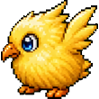

 Fire
Fire Wind
WindTap a stage to read its story.
Flurrchick is a pudgy yellow chick with bright blue eyes and tufts of down that lift in any breeze, making it look perpetually startled. Its small wings already flutter constantly, generating more hot air than lift, and its beak clacks together in time with its excitement. It lives in the warm updraft crevices of Dragon Spire's lower ledges where volcanic heat meets open sky, riding short thermals back and forth between the same two rocks all morning. Anything shiny gets one firm peck before Flurrchick moves on.
Field note: Flurrchick's down-feathers are always warm to the touch even in the coldest part of the spire's shadow-face.
Dragon Spire. Flurrchick and its family are found in the Dragon Spire. See everyone who lives there.
Share a Bond Food that matches its types to become friends. Flurrchick loves:
A Bond Food is not a trick. It joins your spirit with the Kimuro's spirit, and only when it chooses you.
Print the Kimuro adventure packs: mazes, cards, a board game and Bond Mark medals.
See the printable packs